Issue 67 · Mermaid (left) / Pele (right)
Full resolution screenshots; long diagrams continue in consecutive tiles. Click an image to inspect it.
00-dark-compact · src/platform/context/diagrams.md:13
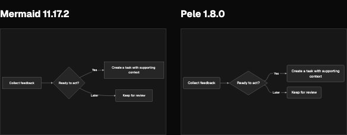
00-dark-document · src/platform/context/diagrams.md:13
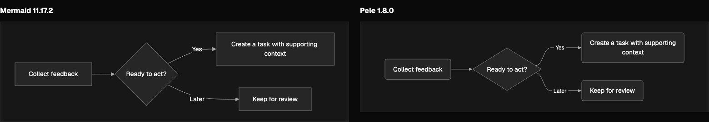
00-dark-full · src/platform/context/diagrams.md:13
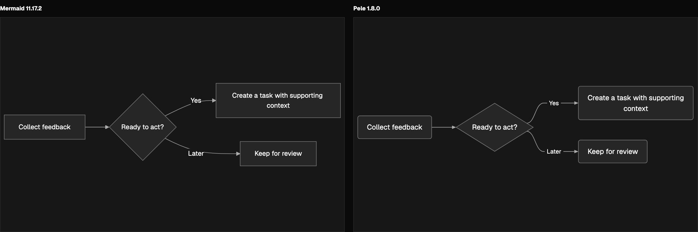
00-dark-narrow · src/platform/context/diagrams.md:13
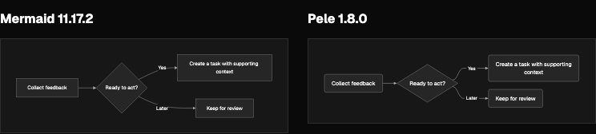
00-light-compact · src/platform/context/diagrams.md:13
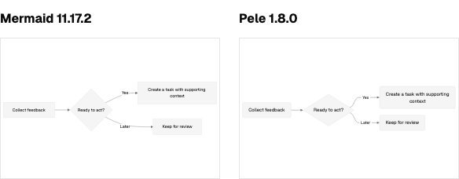
00-light-document · src/platform/context/diagrams.md:13
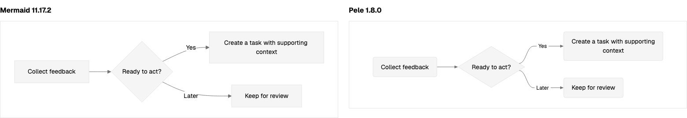
00-light-full · src/platform/context/diagrams.md:13
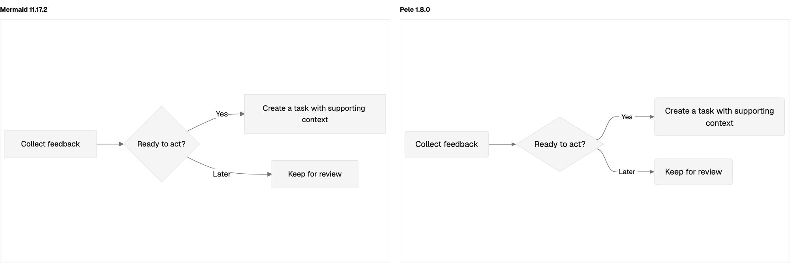
00-light-narrow · src/platform/context/diagrams.md:13

01-dark-compact · src/platform/context/diagrams.md:24
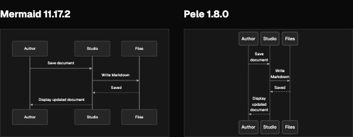
01-dark-document · src/platform/context/diagrams.md:24
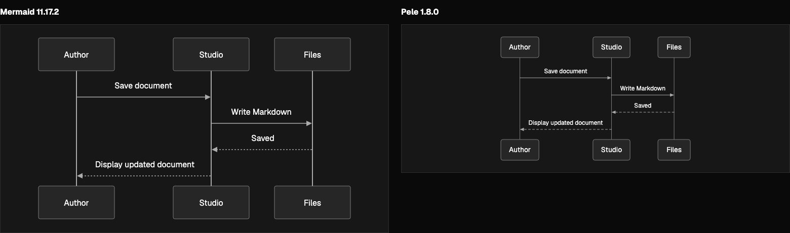
01-dark-full · src/platform/context/diagrams.md:24
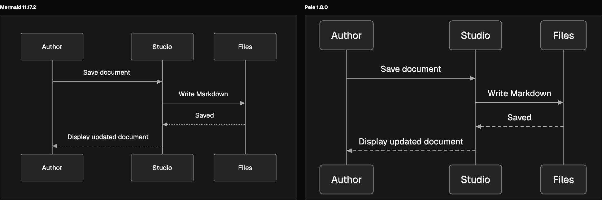
01-dark-narrow · src/platform/context/diagrams.md:24
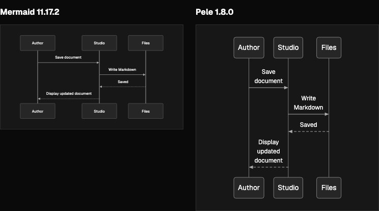
01-light-compact · src/platform/context/diagrams.md:24
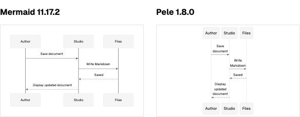
01-light-document · src/platform/context/diagrams.md:24
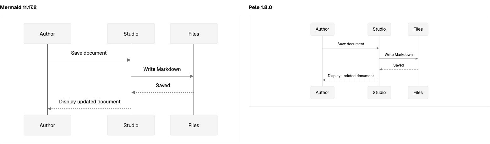
01-light-narrow · src/platform/context/diagrams.md:24
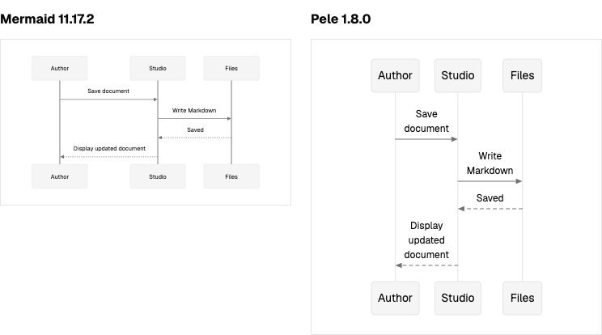
02-dark-compact · src/platform/context/diagrams.md:39
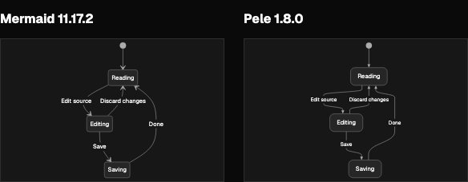
02-dark-document · src/platform/context/diagrams.md:39
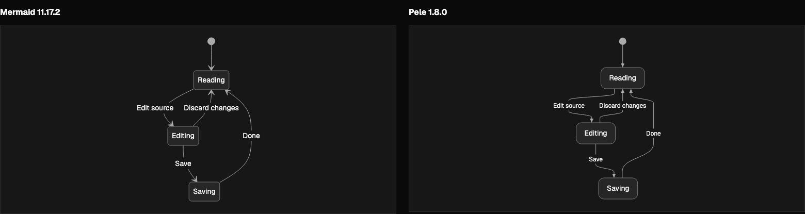
02-dark-narrow · src/platform/context/diagrams.md:39
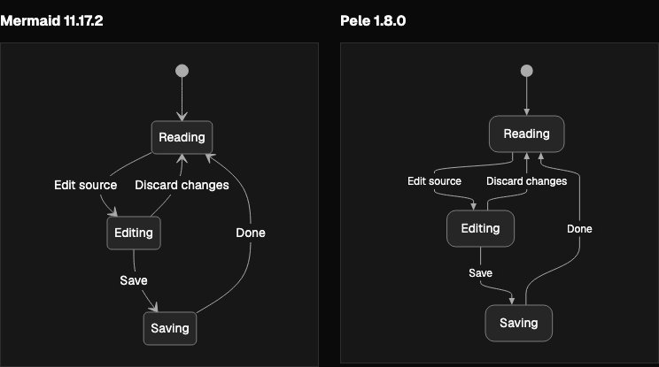
02-light-compact · src/platform/context/diagrams.md:39
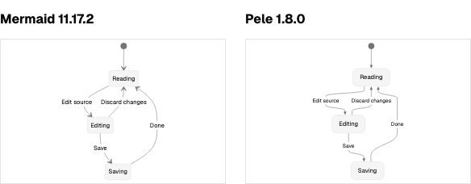
02-light-document · src/platform/context/diagrams.md:39
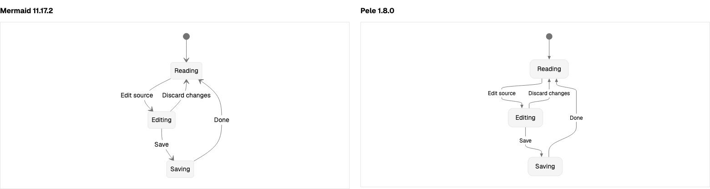
02-light-narrow · src/platform/context/diagrams.md:39
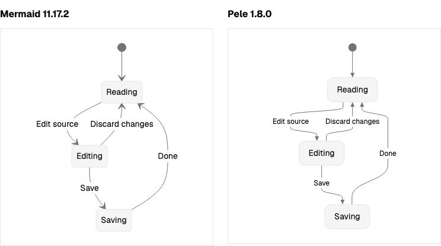
03-dark-compact · src/platform/context/diagrams.md:52
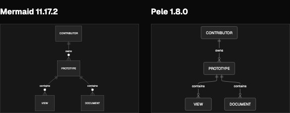
03-dark-document · src/platform/context/diagrams.md:52
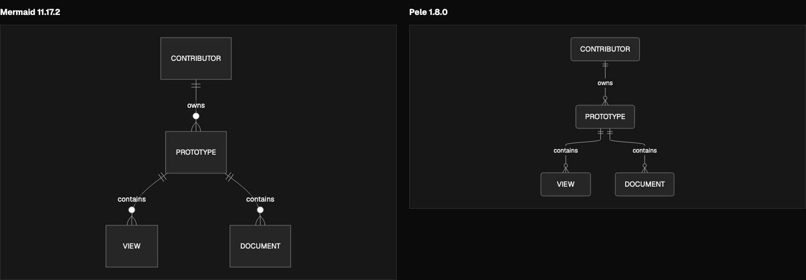
03-dark-narrow · src/platform/context/diagrams.md:52
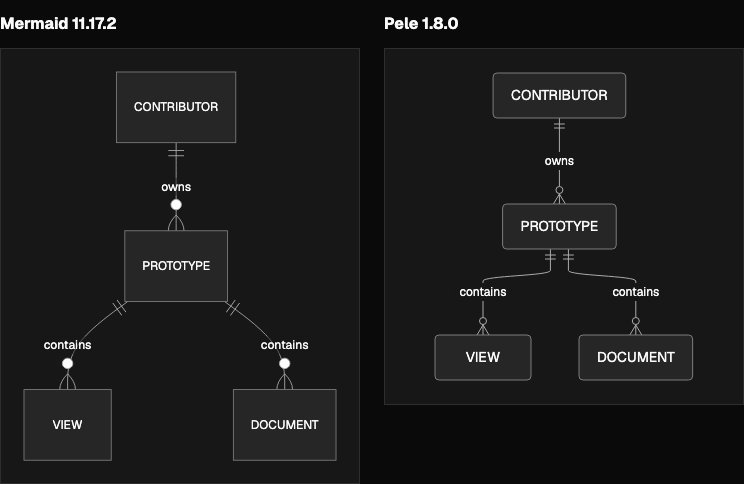
03-light-compact · src/platform/context/diagrams.md:52
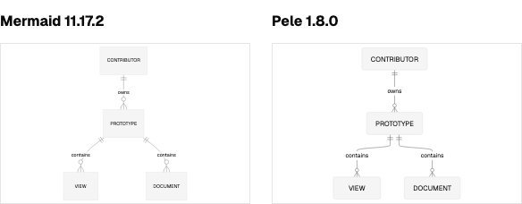
03-light-document · src/platform/context/diagrams.md:52
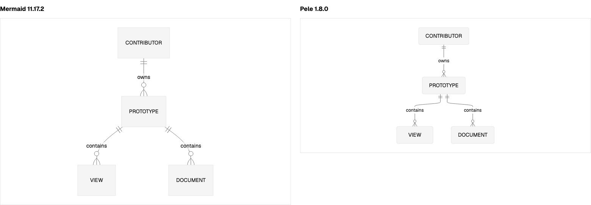
03-light-narrow · src/platform/context/diagrams.md:52
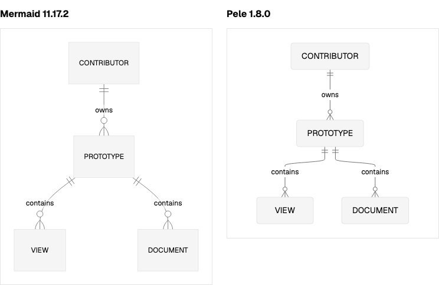
04-dark-compact · src/platform/context/diagrams.md:63
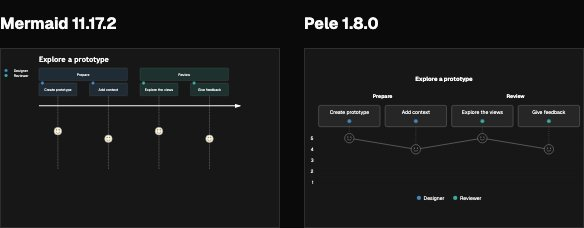
04-dark-document · src/platform/context/diagrams.md:63
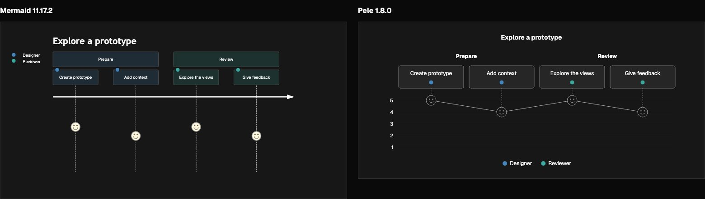
04-dark-narrow · src/platform/context/diagrams.md:63
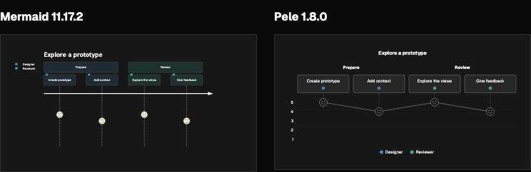
04-light-compact · src/platform/context/diagrams.md:63
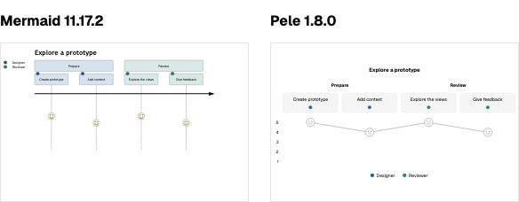
04-light-document · src/platform/context/diagrams.md:63
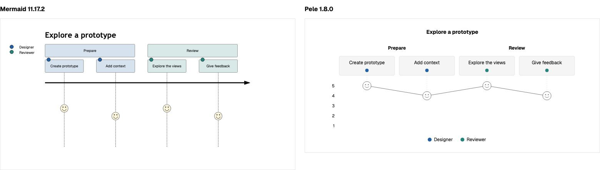
04-light-narrow · src/platform/context/diagrams.md:63
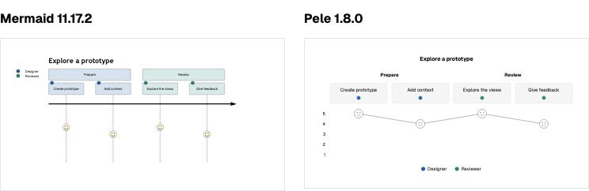
05-dark-compact · src/platform/context/diagrams.md:80
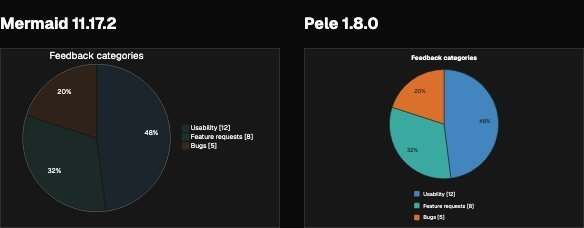
05-dark-document · src/platform/context/diagrams.md:80
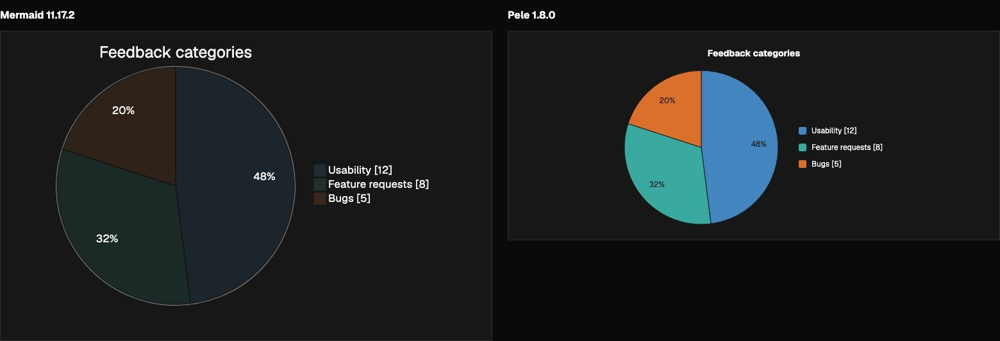
05-dark-narrow · src/platform/context/diagrams.md:80
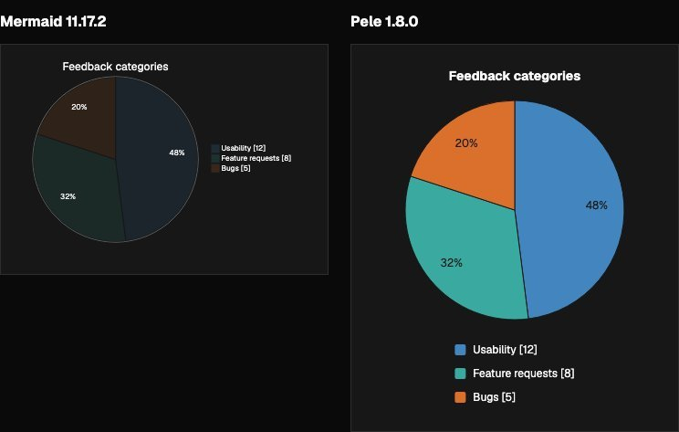
05-light-compact · src/platform/context/diagrams.md:80
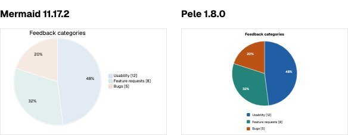
05-light-document · src/platform/context/diagrams.md:80
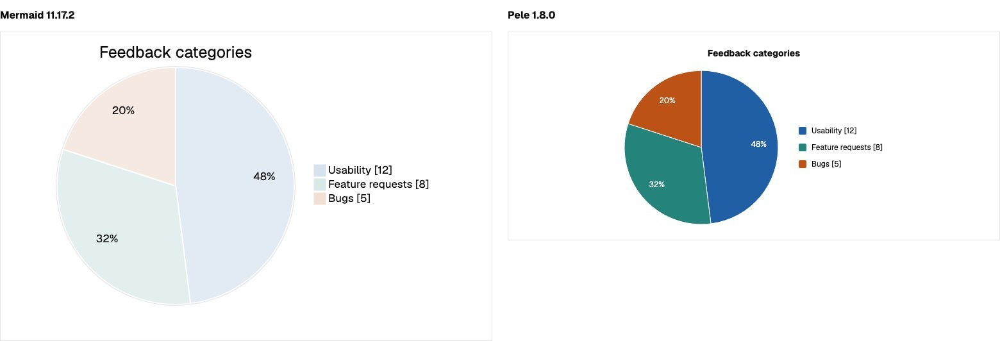
05-light-narrow · src/platform/context/diagrams.md:80
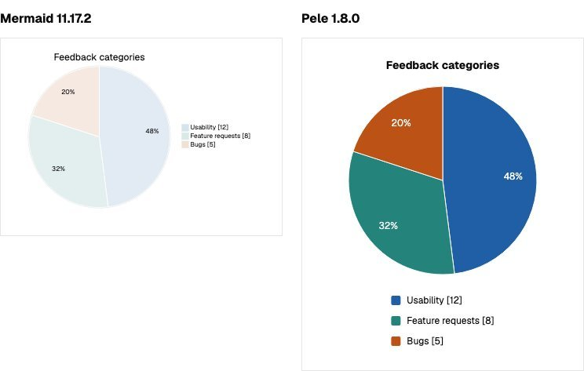
06-dark-compact · src/platform/context/diagrams.md:92
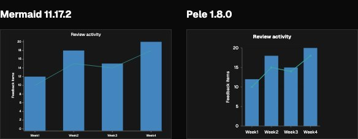
06-dark-document · src/platform/context/diagrams.md:92
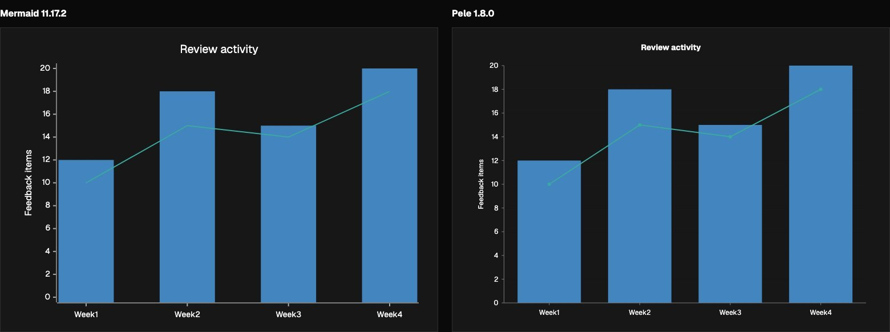
06-dark-narrow · src/platform/context/diagrams.md:92
06-light-compact · src/platform/context/diagrams.md:92
06-light-document · src/platform/context/diagrams.md:92
06-light-full · src/platform/context/diagrams.md:92
06-light-narrow · src/platform/context/diagrams.md:92
07-dark-compact · src/platform/context/resource-identity.md:71
07-dark-document · src/platform/context/resource-identity.md:71
07-dark-full · src/platform/context/resource-identity.md:71
07-dark-narrow · src/platform/context/resource-identity.md:71
07-light-compact · src/platform/context/resource-identity.md:71
07-light-document · src/platform/context/resource-identity.md:71
07-light-full · src/platform/context/resource-identity.md:71
07-light-narrow · src/platform/context/resource-identity.md:71
08-dark-compact · src/platform/modules/documentation/pages/environment.md:22
08-dark-document · src/platform/modules/documentation/pages/environment.md:22
08-dark-full · src/platform/modules/documentation/pages/environment.md:22
08-dark-narrow · src/platform/modules/documentation/pages/environment.md:22
08-light-compact · src/platform/modules/documentation/pages/environment.md:22
08-light-document · src/platform/modules/documentation/pages/environment.md:22
08-light-full · src/platform/modules/documentation/pages/environment.md:22
08-light-narrow · src/platform/modules/documentation/pages/environment.md:22
09-dark-compact · src/platform/modules/documentation/pages/index.md:23
09-dark-document · src/platform/modules/documentation/pages/index.md:23
09-dark-full · src/platform/modules/documentation/pages/index.md:23
09-dark-narrow · src/platform/modules/documentation/pages/index.md:23
09-light-compact · src/platform/modules/documentation/pages/index.md:23
09-light-document · src/platform/modules/documentation/pages/index.md:23
09-light-full · src/platform/modules/documentation/pages/index.md:23
09-light-narrow · src/platform/modules/documentation/pages/index.md:23
10-dark-compact · src/platform/modules/documentation/pages/share.md:12
10-dark-document · src/platform/modules/documentation/pages/share.md:12
10-dark-full · src/platform/modules/documentation/pages/share.md:12
10-dark-narrow · src/platform/modules/documentation/pages/share.md:12
10-light-compact · src/platform/modules/documentation/pages/share.md:12
10-light-document · src/platform/modules/documentation/pages/share.md:12
10-light-full · src/platform/modules/documentation/pages/share.md:12
10-light-narrow · src/platform/modules/documentation/pages/share.md:12
11-dark-compact · src/platform/modules/documentation/pages/team.md:55
11-dark-document · src/platform/modules/documentation/pages/team.md:55
11-dark-full · src/platform/modules/documentation/pages/team.md:55
11-dark-narrow · src/platform/modules/documentation/pages/team.md:55
11-light-compact · src/platform/modules/documentation/pages/team.md:55
11-light-document · src/platform/modules/documentation/pages/team.md:55
11-light-full · src/platform/modules/documentation/pages/team.md:55
11-light-narrow · src/platform/modules/documentation/pages/team.md:55
12-dark-compact · src/prototypes/parker/feedback-inbox/discovery/feedback-flow.mermaid
12-dark-document · src/prototypes/parker/feedback-inbox/discovery/feedback-flow.mermaid
12-dark-full · src/prototypes/parker/feedback-inbox/discovery/feedback-flow.mermaid
12-dark-narrow · src/prototypes/parker/feedback-inbox/discovery/feedback-flow.mermaid
12-light-compact · src/prototypes/parker/feedback-inbox/discovery/feedback-flow.mermaid
12-light-document · src/prototypes/parker/feedback-inbox/discovery/feedback-flow.mermaid
12-light-full · src/prototypes/parker/feedback-inbox/discovery/feedback-flow.mermaid
12-light-narrow · src/prototypes/parker/feedback-inbox/discovery/feedback-flow.mermaid
13-dark-compact · nested-linked-subgraphs
13-dark-document · nested-linked-subgraphs
13-dark-full · nested-linked-subgraphs
13-dark-narrow · nested-linked-subgraphs
13-light-compact · nested-linked-subgraphs
13-light-document · nested-linked-subgraphs
13-light-full · nested-linked-subgraphs
13-light-narrow · nested-linked-subgraphs

14-dark-compact · cycles-dense-labels
14-dark-document · cycles-dense-labels
14-dark-full · cycles-dense-labels
14-dark-narrow · cycles-dense-labels
14-light-compact · cycles-dense-labels
14-light-document · cycles-dense-labels
14-light-full · cycles-dense-labels
14-light-narrow · cycles-dense-labels
15-dark-compact · labels-style-unicode
15-dark-document · labels-style-unicode
15-dark-full · labels-style-unicode
15-dark-narrow · labels-style-unicode
15-light-compact · labels-style-unicode
15-light-document · labels-style-unicode
15-light-full · labels-style-unicode
15-light-narrow · labels-style-unicode
16-dark-compact · sequence-80
16-dark-document · sequence-80
16-dark-full · sequence-80
16-dark-narrow · sequence-80
16-light-compact · sequence-80
16-light-document · sequence-80
16-light-full · sequence-80
16-light-narrow · sequence-80
17-dark-compact · edges-480
17-dark-document · edges-480
17-dark-narrow · edges-480
17-light-compact · edges-480
17-light-document · edges-480
17-light-full · edges-480
17-light-narrow · edges-480
18-dark-compact · frontmatter-init
18-dark-document · frontmatter-init
18-dark-full · frontmatter-init
18-dark-narrow · frontmatter-init
18-light-compact · frontmatter-init
18-light-document · frontmatter-init
18-light-full · frontmatter-init
18-light-narrow · frontmatter-init
auto-0-false · Automatic direction comparison
auto-0-true · Automatic direction comparison
auto-13-false · Automatic direction comparison
auto-13-true · Automatic direction comparison

auto-15-false · Automatic direction comparison
auto-15-true · Automatic direction comparison